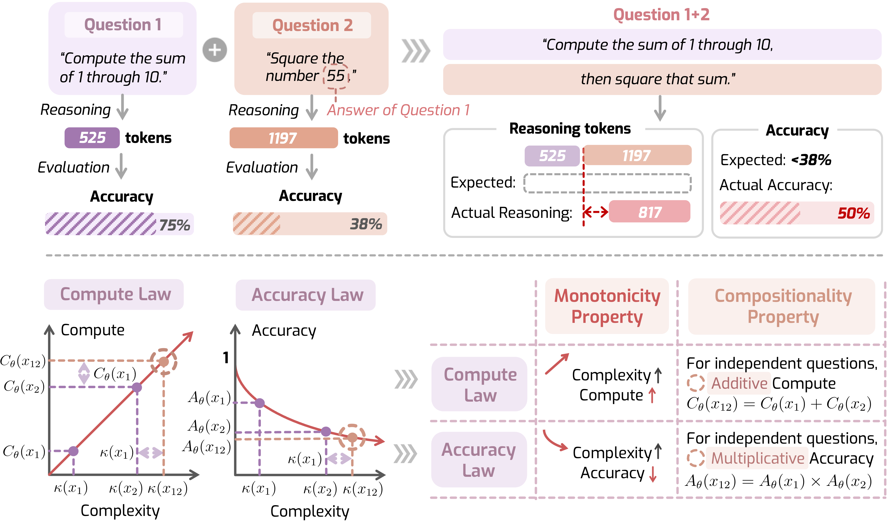
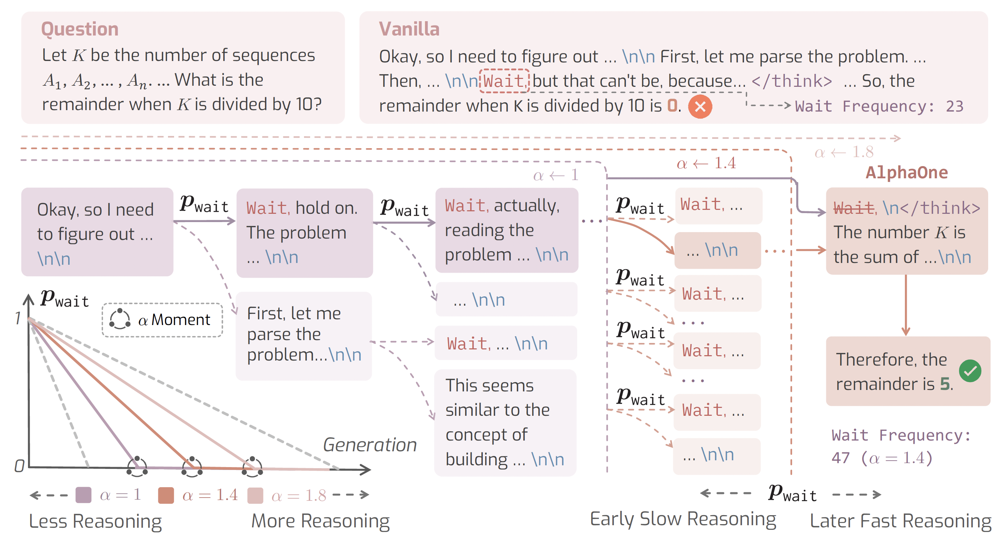
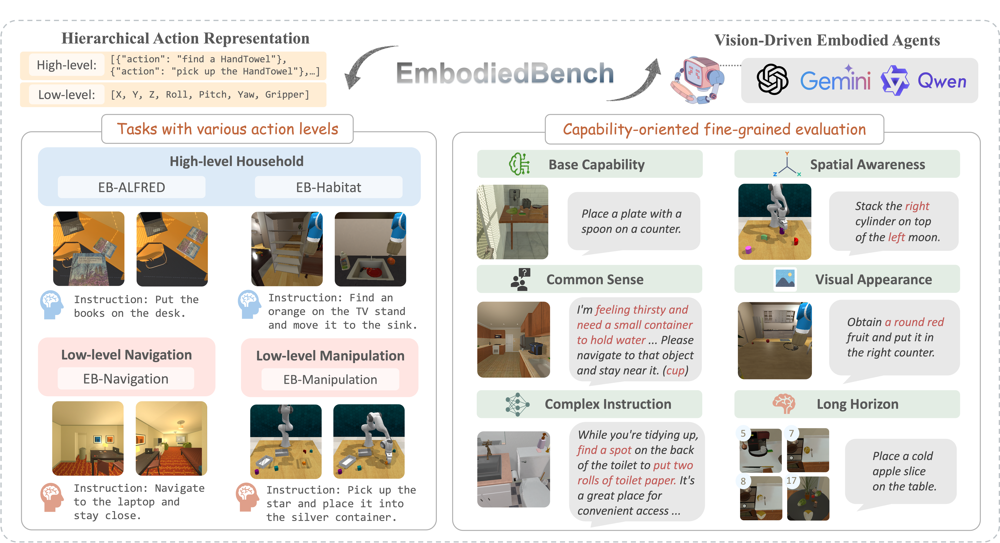
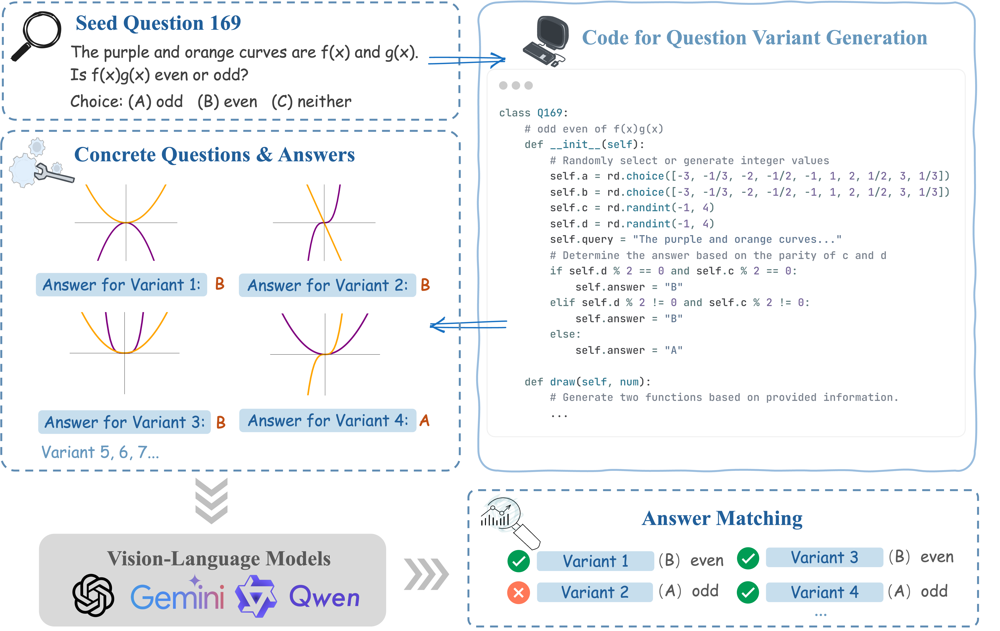
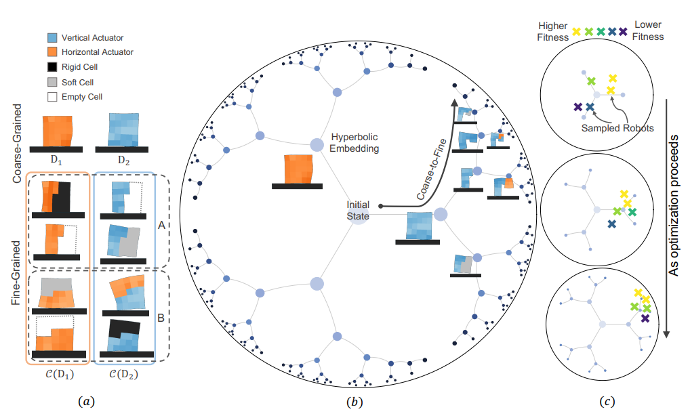
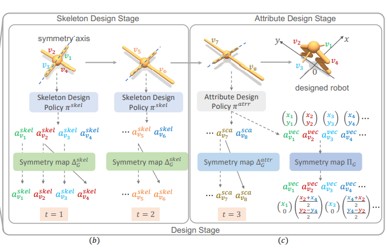
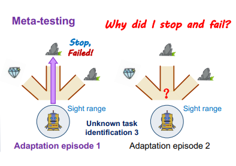

|
Junyu Zhang
I am a Master's student in Computer Science (MSCS) at University of Illinois Urbana-Champaign, advised by Prof. Huan Zhang.
Previously, I received my bachelor's degree from Huazhong University of Science and Technology. I am fortunate to work under the supervision of Prof. Paul Pu Liang at MIT, Prof. Tong Zhang at UIUC, Prof. Chongjie Zhang in the Institute for Interdisciplinary Information Sciences at Tsinghua University and Prof. Chuang Gan in the MIT-IBM Watson AI Lab.
In the era of large-scale foundation models, my research goal is to incentivize the capabilities of pretrained models by empowering them to perform
long-term reasoning and learn from interaction, thereby building scalable and generalizable AI for the open world. Toward this goal,
my previous research primarily focused on
- Large Language Models Reasoning: efficient and theoretically grounded reasoning;
embodied spatial reasoning for agentic decision-making;
mathematical reasoning with scalable evaluation.
- Learning from Interactions: empirical RL algorithms and their applications in robotics,
including morphology–behavior co-optimization and robotic manipulation.
I am an incoming PhD student in Computer Science at the University of Pennsylvania (Fall 2026), advised by Prof. Jiayuan Mao.
If you would like to discuss my research or potential collaborations further, feel
free to contact me. I'm open to connect and collaborate with each other.
Email /
CV (last updated: Dec 2025) /
Google Scholar /
Github /
Twitter
|
|
News
| 2025/11 - LoRe has been selected as an Oral Presentation at the NeurIPS 2025 Workshop. See you in 🌴 San Diego!
| | 2025/09 - Honored to be selected as a Siebel Scholar by the Siebel Scholars Foundation! |
| 2025/08 - Invited talk at NVIDIA AI Reasoning Team and MIT Media Lab. [Slides] |
| 2025/06 - We have released AlphaOne, a universal framework for modulating reasoning progress in large reasoning models at test time 🔥. Explore more on our website! |
| 2025/06 - EmbodiedBench got accepted to ICML 2025 Oral 🔥. Check out our project page here. |
| 2025/01 - DynaMath got accepted to ICLR 2025. |
| 2024/01 - Our work about multi-cellular soft robot design got accepted to ICLR 2024. |
| 2023/02 - Selected as the Outstanding undergraduates in Term of Academic Performance in 2022 (top 1%)! |
Publications and Preprints
|

|
When Reasoning Meets Its Laws
Junyu Zhang*,
Yifan Sun*,
Tianang Leng*,
Jingyan Shen*,
Liu Ziyin†,
Paul Pu Liang†,
Huan Zhang†
NeurIPS 2025 Workshop on Efficient Reasoning (Best Paper Nomination)
[Paper]
[Website]
|
|

|
AlphaOne: Reasoning Models Thinking Slow and Fast at Test Time
Junyu Zhang*,
Runpei Dong*,
Han Wang,
Xuying Ning,
Haoran Geng,
Peihao Li,
Xialin He,
Yutong Bai,
Jitendra Malik,
Saurabh Gupta,
Huan Zhang
The 2025 Conference on Empirical Methods in Natural Language Processing (EMNLP Main), 2025
[Paper]
[Website]
Press: VentureBeat
|
|

|
EmbodiedBench: Comprehensive Benchmarking Multi-modal Large Language Models for Vision-Driven Embodied Agents
Rui Yang*,
Hanyang Chen*,
Junyu Zhang*,
Mark Zhao*,
Cheng Qian,
Kangrui Wang,
Qineng Wang,
Teja Venkat Koripella,
Marziyeh Movahedi,
Manling Li,
Heng Ji,
Huan Zhang,
Tong Zhang
The Forty-second International Conference on Machine Learning (ICML Oral), 2025
[Paper]
[Website]
[Hugging Face]
|
|

|
DynaMath: A Dynamic Visual Benchmark for Evaluating Mathematical Reasoning Robustness of Vision Language Models
Chengke Zou*,
Xingang Guo*,
Rui Yang*,
Junyu Zhang,
Bin Hu,
Huan Zhang
The Thirteenth International Conference on Learning Representations (ICLR), 2025
[Paper]
[Website]
[Dataset]
|
|

|
Leveraging Hyperbolic Embeddings for Coarse-to-Fine Robot Design
Heng Dong*,
Junyu Zhang*,
Chongjie Zhang
The Twelfth International Conference on Learning Representations (ICLR), 2024
[Paper]
[Website]
|
|

|
Symmetry-Aware Robot Design with Structured Subgroups
Heng Dong,
Junyu Zhang,
Tonghan Wang,
Chongjie Zhang
The Fortieth International Conference on Machine Learning (ICML), 2023
[Paper]
[Website]
|
|

|
Offline Meta Reinforcement Learning with In-Distribution Online Adaptation
Jianhao Wang*,
Jin Zhang*,
Haozhe Jiang,
Junyu Zhang,
Liwei Wang,
Chongjie Zhang
The Fortieth International Conference on Machine Learning (ICML), 2023
[Paper]
|
Academic Services
Conference Reviewers:
ICLR 2025, NeurIPS 2025, ACL ARR 2025, ICLR 2026
Teaching Assistants:
ECE 598 - Advanced Topics in Machine Learning and Formal Methods, UIUC, Fall 2024
CS 441 - Applied Machine Learning, UIUC, Spring 2025
CS 107 - Data Science Discovery, UIUC, Fall 2025 - Spring 2026
|
{kind=link}